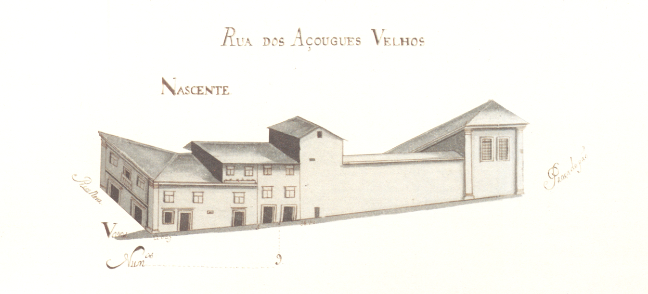

Número: 3
Nome: Rua dos Açougues velhos

Rua dos Açougues Velhos - vista nascente.
Pequenina rua que liga a fachada da Sé com a rua Nova.
Aberta possivelmente na Idade Media nela existiram ate ao sec. XV os açougues da cidade. Nessa data a rua era mais longa, prolongando-se até quase ao início da rua do Poço.
Actualmente poucas alterações de peso há nesta rua quanto ao Mappa e nenhuma respeitante ao seu tamanho e largura. O edifício pertencente à Sé foi porém substancialmente aumentado em altura, apresentando-se hoje radicalmente diferente.
Pena foi que as casas dos prazos n.° 3 e 4 desta rua, ja em 1750 com um só inquilino, tivessem sido destruídos, pois apresentavam uma curiosíssima janela de canto e um jogo de telhados estranho.
Das duas casas do lado Norte e 6 do Sul pertenciam ao Cabido 1 e 6 respectivamente.
Não sabemos quando o seu nome mudou para a rua do Cabido. No mapa de 1857 tem ainda o nome de Travessa dos Açougues Velhos.
Lista de Casas
- Casa:
- Número: 1
- Enfiteuta: None
- Foro: None
- Desc: Corresponde à casa nº16 da Praça do Pão para onde tem a frontaria e serventia principais.
- Casa:
- Número: 2,3,4
- Enfiteuta: Padre Francisco Xavier de Campos
- Foro: 610 reis e 1 capão
- Desc: Estas casas foram construídas depois de 1550, em pertenças do nº16, da Praça do Pão e, desde o ano de 1725, constituem um só prazo.
- Casa:
- Número: 5
- Enfiteuta: Teresa Tomásia, viúva de Agostinho Marques da Silva, ourives
- Foro: 105 reis e 1 galinha
- Desc: A última porta do nº6, para o lado do norte, é serventia do nº7 da rua Nova. Encontram-se unidas desde o ano de 1641.
- Casa:
- Número: 6
- Enfiteuta: Teresa Tomásia, viúva de Agostinho Marques da Silva, ourives
- Foro: 120 reis e 1 galinha
- Desc: A última porta do nº6, para o lado do norte, é serventia do nº7 da rua Nova. Encontram-se unidas desde o ano de 1641.
- Casa:
- Número: 7 e 8
- Enfiteuta:
- Foro:
- Desc: Desde do ano 1644 que correspondem ao nº5 da Rua Nova de Sousa, para onde têm a frontaria e serventia principais.
- Casa:
- Número: 9
- Enfiteuta: Pedro Pereira
- Foro: 40 reis e 1 galinha
- Desc: Foi demolida para alargamento das casas do Cabido, depois do ano de 1793.